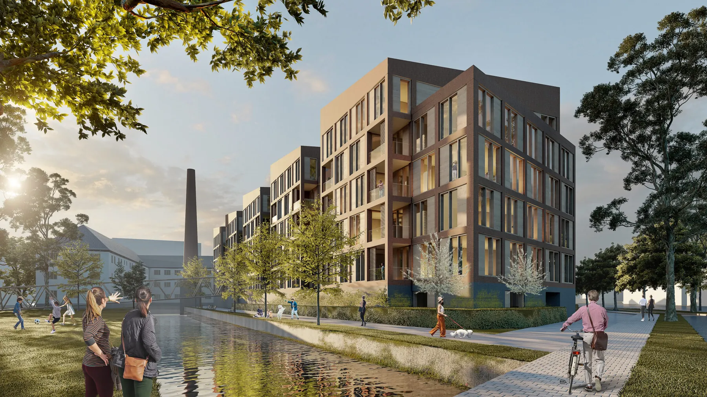

KATHREIN Werksviertel Rosenheim: Nachhaltigkeit, Innovation und Soziale Integration im Fokus
Kathrein Werksviertel, Rosenheim
KATHREIN Werksviertel Rosenheim: Nachhaltigkeit, Innovation und Soziale Integration im Fokus
Willkommen im Kathrein Werksviertel, einem attraktiven Quartier mit atemberaubendem Bergblick. Unser neues Quartier in der Hochschulstadt Rosenheim vereint moderne Stadtplanung und urbanen Komfort. Eingebettet in die malerische Landschaft der bayrischen Voralpen, wird das Kathrein Werksviertel zum neuen Wahrzeichen der Region. Hier verschmelzen urbanes Leben und naturnahe Erholung zu einem einzigartigen Lebensraum.
Immobilien des jahres 2024Auszeichnung kAthrein werksviertel
Die Publikation „Immobilien des Jahres 2024“ versammelt die aktuellsten Projekte im Bereich Architektur und Gebäudeplanung: Bauten mit hohem architektonischem Anspruch, die sich in der Planung befinden oder noch nicht abgeschlossen sind. Fortan werden jährlich die besten geplanten Projekte anhand ihrer Konzepte geehrt. Wir freuen uns sehr über unsere Anerkennung .
Kreativ, generationsübergreifend, inspirierend!
Das KATHREIN Family Office hat in Kooperation mit Brückner Projektentwicklung das Ziel, das Quartier zwischen Anton-Kathrein-Straße, Gießereistraße und Salinstraße in Rosenheim zu einem innovativen und nachhaltigen Stadtviertel zu entwickeln. Unbebaute Flächen werden genutzt und bestehende Gebäude durch moderne Konzepte in das Quartier integriert. Die Leitung des Vorhabens liegt bei der KATHREIN Werksviertel Projektentwicklungsgesellschaft, gegründet von Andreas Konle, Laurent Brückner und Andreas Köglmeier.
Das etwa 20.000 qm große frühere Firmengelände des Antennenherstellers Kathrein
Historie
Das etwa 20.000 qm große frühere Firmengelände des Antennenherstellers Kathrein liegt zwischen Anton-Kathrein-Straße, Gießereistraße und Salinstraße, nur wenige hundert Meter vom Rosenheimer Bahnhof und kaum einen Kilometer von der Innenstadt entfernt. Das Projekt verbindet die Altstadt von Rosenheim mit dem Bahnhofsareal und setzt städtebauliche Akzente. Die Gebäude sollen ein Wegweiser für Besucher sein und die Identität des Ortes widerspiegeln.
Competition

VIELSEITIGER NUTZUNGSMIX
Unsere vielseitigen Planungen bieten eine breite Palette an Nutzungsmöglichkeiten: sozialer Wohnungsbau, Appartements für Studierende, Flächen für Gastronomie und Büros, spezialisierte Schulen wie Pflegeschulen und luxuriöse Penthouse-Wohnungen. Dieses flexible Konzept geht auf die Bedürfnisse der Gemeinschaft ein und sorgt für eine lebendige und dynamische Umgebung.
geplant ist ein energieautarkes Stadtquartier
Unser Engagement für Nachhaltigkeit zeigt sich in jedem Aspekt unseres Projekts. Sorgfältig geplante Begrünungskonzepte, Smart Building-Technologien, Regenwasserbewirtschaftung, Photovoltaikanlagen und eine Grundwasserwärmepumpe tragen dazu bei, dass wir 100% autark sind und einen positiven ökologischen Fußabdruck hinterlassen.
Das KATHREIN Werksviertel strebt Energieautarkie an. Energie soll aus oberflächennaher Erdwärme und einem vorhandenen Wasserkraftwerk gewonnen werden. Die architektonische Gestaltung und Nutzung der Ressourcen unterstützen dieses Ziel. Städtebauliche Bedeutung: Das Projekt verbindet die Altstadt von Rosenheim mit dem Bahnhofsareal und setzt städtebauliche Akzente. Die Gebäude sollen ein Wegweiser für Besucher sein und die Identität des Ortes widerspiegeln.
Nutzungsmix bringt Vielfalt und Farbe
Unsere vielseitigen Planungen bieten eine breite Palette an Nutzungsmöglichkeiten: sozialer Wohnungsbau, Appartements für Studierende, Flächen für Gastronomie und Büros, spezialisierte Schulen wie Pflegeschulen und luxuriöse Penthouse-Wohnungen. Ein flexibles Konzept, das auf die Bedürfnisse der Gemeinschaft eingeht.
KATHREIN Kreativquartier, KATHREIN Lofts und KATHREIN Werksviertel
KATHREIN Kreaktivquartier: Im Norden am Mühlbach befinden sich die Gebäude, in welchen die Industriegeschichte von Kathrein begann. Diese historischen Gebäude werden in das neue Quartier integriert und sollen als Ateliers und gastronomische Betriebe genutzt werden. So entsteht eine kreative Szene, die dem gesamten Quartier junges urbanes Leben einhaucht.
KATHREIN Lofts: Die bestehenden Gebäude entlang der Salinstraße werden zu Wohn- und Gewerbeeinheiten umgestaltet. Der industrielle Charme und die großen Raumhöhen der Gebäude bleiben erhalten, während ein innenliegender Park entsteht. Diese Mischung aus Alt und Neu schafft ein einzigartiges Wohn- und Arbeitsumfeld.
KATHREIN Werksviertel: Auf dem ehemaligen Parkplatz zwischen Mühlbach und Gießereistraße entsteht ein lebendiges Quartier mit vielfältiger Nutzung. Die räumliche Aufteilung fördert das Miteinander von Alt und Neu, Arbeit und Wohnen. Dieses Quartier wird zu einem lebendigen Zentrum mit hoher Lebensqualität.
Soziale Ziele des Projektes
Das Stadtquartier wird nicht nur für klassische Nutzungen wie Büros und Wohnungen gestaltet, sondern berücksichtigt auch soziale Aspekte. Beispielsweise ist die Integration der Schwesternschule in die KATHREIN Lofts geplant, um Bildungseinrichtungen einzubeziehen.
Der KATHREIN Park ist ein Ort der Begegnung und sorgt für eine hohe Lebensqualität im Stadtquartier. Bäume spenden im Sommer Schatten, aber auch Sonnenanbeter dürfen sich über offen Flächen freuen. Kinder können sich auf einem öffentlichen Spielplatz austoben. Infotafeln beschäftigen sich mit der Geschichte der Firma KATHREIN am Standort.
KATHREIN Kreativquartier
Im Norden am Mühlbach befinden sich die Gebäude, in welchen die Industriegeschichte von Kathrein begann. Diese historischen Gebäude werden in das neue Quartier integriert und sollen als Ateliers und gastronomische Betriebe genutzt werden. So entsteht eine kreative Szene, die dem gesamten Quartier junges urbanes Leben einhaucht.
Optimale Lage und Erreichbarkeit
Öffentlicher Nahverkehr (ÖPNV)
Bahnhof nur 400 Meter entfernt – ideal für Pendler!
In 27 Minuten nach München Ost und in 37 Minuten zum Hauptbahnhof.
Mit RE und S-Bahn in 1 Stunde und 10 Minuten zum Flughafen München.
Direktverbindung in 1 Stunde und 7 Minuten nach Salzburg.
Auto
1 Stunde bis ins Stadtzentrum München.
1 Stunde und 20 Minuten bis zum Flughafen München.
1 Stunde bis ins Stadtzentrum Salzburg.
1 Stunde und 30 Minuten bis ins Stadtzentrum Innsbruck.
Entdecken Sie das Kathrein Werksviertel – ein Ort, an dem urbanes Leben und naturnahe Erholung perfekt harmonieren.
Auszeichnungen:
Nominierung B!WRD Projektentwicklerpreis 2025
Deutscher Award für Nachhaltigkeitsprojekte 2024
Anerkennung Immobilien des Jahres 2024
Iconic Award 2024
aUFTRAGGEBER: kATHREIN FAMILY OFFICE
Geplante Fertigstellung: 2028
lEISTUNG: Projektentwicklung und Generalplanung, nachhaltige Energiekonzepte, ESG und EU-Taxonomie, BIM
Besonderheiten:
Nachhaltigste Projektentwicklung Deutschlands
Nutzung von Wasserkraft, Geothermie, Photovoltaik, Abwärme Rechenzentrum
Nutzung:
Nutzungsmischung, Büro, Einzelhandel, Wohnen
Soziale Nutzungskomponente z.B. Wohnen Pflegekräfte
Wir haben IhrInteresse geweckt?
Sie haben Fragen oder wollen einen Termin vereinbaren?